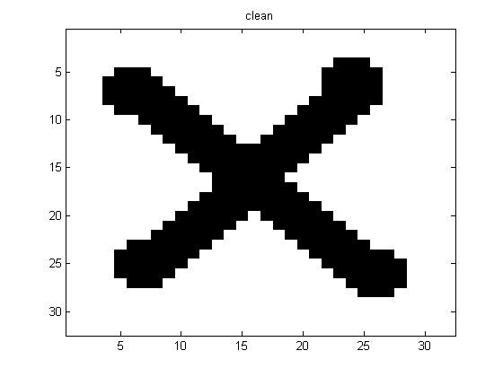
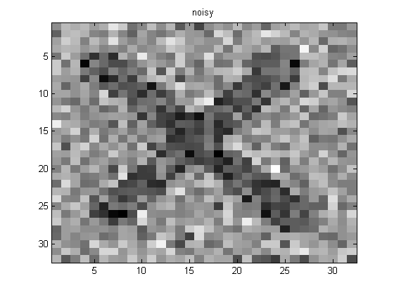
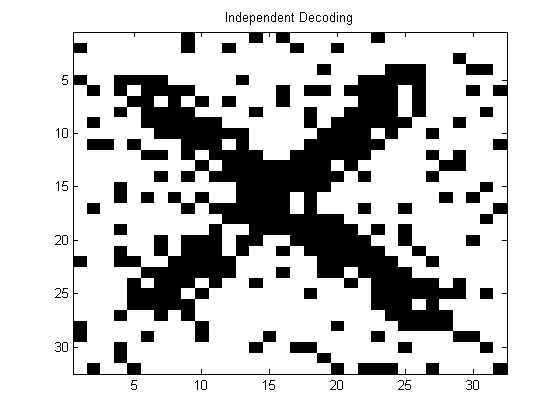
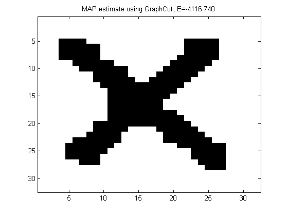
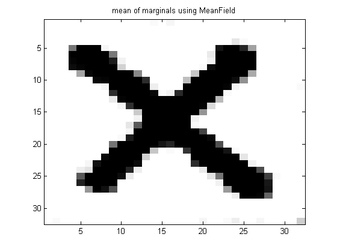
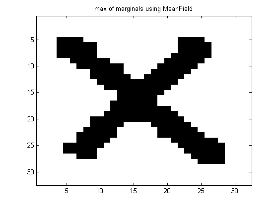

Contents
Demonstrate inference in a 2d grid of a noisy image of an X
Based on http://www.cs.ubc.ca/~schmidtm/Software/UGM/graphCuts.html http://www.cs.ubc.ca/~schmidtm/Software/UGM/ICM.html http://people.cs.ubc.ca/~schmidtm/Software/UGM/MCMC.html http://www.cs.ubc.ca/~schmidtm/Software/UGM/variational.html
% This file is from pmtk3.googlecode.com
Get model and data
setSeed(0); X = loadData('Ximg'); Xclean = X; X = Xclean + 0.5*randn(size(Xclean)); [nRows, nCols] = size(Xclean); figure; imagesc(Xclean); colormap('gray'); title('clean'); printPmtkFigure('mrfImgClean') figure; imagesc(X); colormap('gray'); title('noisy');printPmtkFigure('mrfImgNoisy') 
Independent Decoding
[model] = mrf2MkLatticeX(X, 'dummy', {}); [junk IndDecoding] = max(model.nodePot,[],2); figure; imagesc(reshape(IndDecoding,nRows,nCols)); colormap gray; title('Independent Decoding'); printPmtkFigure('mrfImgIndep')
MAP estimation
methods = {};
methodArgs = {};
methods{end+1} = 'GraphCut';
methodArgs{end+1} = {};
%{
methods{end+1} = 'ICM';
methodArgs{end+1} = {'nRestarts', 100};
methods{end+1} = 'Gibbs';
methodArgs{end+1} = {'burnIn', 100, 'nSamples', 1000};
methods{end+1} = 'LBP';
methodArgs{end+1} = {'maxIter', 100};
methods{end+1} = 'TRBP';
methodArgs{end+1} = {'maxIter', 100};
%}
for i=1:length(methods)
method = methods{i};
args = methodArgs{i};
[model] = mrf2MkLatticeX(X, method, args);
zhat = mrf2Map(model);
energy = mrf2Energy(model, zhat);
figure; imagesc(reshape(zhat,nRows,nCols));
colormap gray;
title(sprintf('MAP estimate using %s, E=%5.3f', method, energy));
printPmtkFigure(sprintf('mrfImgEst%s', method))
end
 Inference
methods = {};
methodArgs = {};
methods{end+1} = 'MeanField';
methodArgs{end+1} = {'maxIter', 100};
%{
methods{end+1} = 'Gibbs';
methodArgs{end+1} = {'burnIn', 100, 'nSamples', 1000};
methods{end+1} = 'LBP';
methodArgs{end+1} = {'maxIter', 100};
methods{end+1} = 'TRBP';
methodArgs{end+1} = {'maxIter', 100};
methods{end+1} = 'VarMCMC';
methodArgs{end+1} = {'burnIn', 100, 'nSamples', 1000, 'varProb', 0.25};
%}
for i=1:length(methods)
method = methods{i};
args = methodArgs{i};
[model] = mrf2MkLatticeX(X, method, args);
[nodeBel] = mrf2InferNodesAndEdges(model);
p1 = nodeBel(:,2);
figure; imagesc(reshape(p1,nRows,nCols)); colormap gray;
title(sprintf('mean of marginals using %s', method));
printPmtkFigure(sprintf('mrfImgMeanOfMarginals%s', method))
[junk zhat] = max(nodeBel,[],2); % marginal map esimate
figure; imagesc(reshape(zhat,nRows,nCols)); colormap gray;
title(sprintf('max of marginals using %s', method));
printPmtkFigure(sprintf('mrfImgMaxOfMarginals%s', method))
end
  Sampling
methods = {};
methodArgs = {};
%{
methods{end+1} = 'Gibbs';
methodArgs{end+1} = {'burnIn', 100, 'nSamples', 1000};
%}
nSamples = 1000;
for i=1:length(methods)
method = methods{i};
args = methodArgs{i};
[model] = mrf2MkLatticeX(X, method, args);
X = mrf2Sample(model, nSamples);
figure;
for j = 1:9
subplot(3,3,j);
s = j*nSamples/10;
imagesc(reshape(X(s, :),nRows,nCols));
colormap gray
end
suptitle(sprintf('Samples using %s', method))
printPmtkFigure(sprintf('mrfImgSamples%s', method))
end